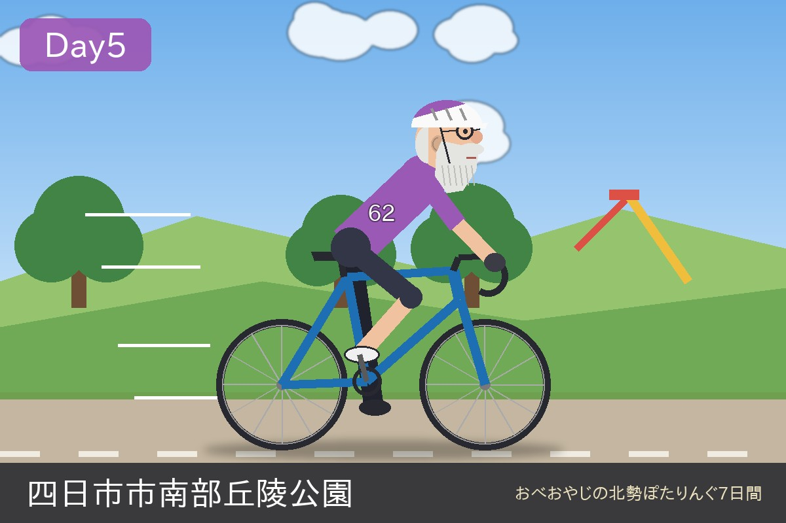

5日目は四日市市の南部丘陵公園へ。丘陵地を生かした広い公園で、のびのびした景色が楽しめます。
四日市市南部丘陵公園は、芝生広場や遊具、園路が整備された広い公園。家族連れも多く、休日はにぎやかです。
丘陵地なので周辺はゆるやかなアップダウンが続きます。景色を眺めながら、マイペースでペダルを回しましょう。園内のルールに従い、自転車の乗り入れ可否は現地の案内を確認してください。
子どもたちのはしゃぐ声を聞きながら芝生でひと休み。孫を連れてまた来たいと思える場所です。
※公園内の自転車の乗り入れ・駐輪のルールや施設の情報は変わることがあります。お出かけ前に各市・公園の最新の公式案内を確認してください。
それではまた明日。安全運転で、ゆっくり行きましょう。
―― おべおやじ（62歳・ヒゲおやじ）
#サイクリング #四日市市 #南部丘陵公園 #シニアライフ #公園巡り